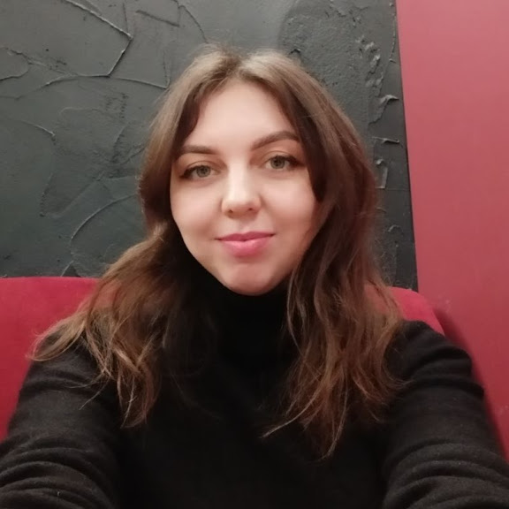

Ivanna Pyshuk

I am studying web design and want to connect my professional life with it.
EDUCATION
Lesya Ukrainka Eastern European National University
Master’s Degree in Political Science (with honors)
2011 – 2017
WORK EXPERIENCE
State Agency for Land Reclamation and Fisheries Management in Volyn Region
Press Secretary, Records Manager
March 2019 – Present
- Preparing and timely publishing materials on environmental topics, the agency’s work, and conservation activities on the website and Facebook page. Cooperation with the media.
- Working with the ASCOD electronic document management system: registering incoming/outgoing documents, monitoring timely execution of correspondence.
- Managing the “hotline” of the Volyn Fishery Patrol. Handling citizen inquiries and complaints.